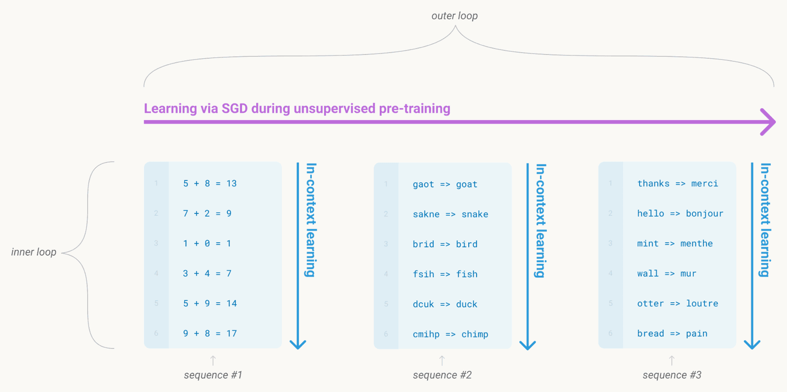
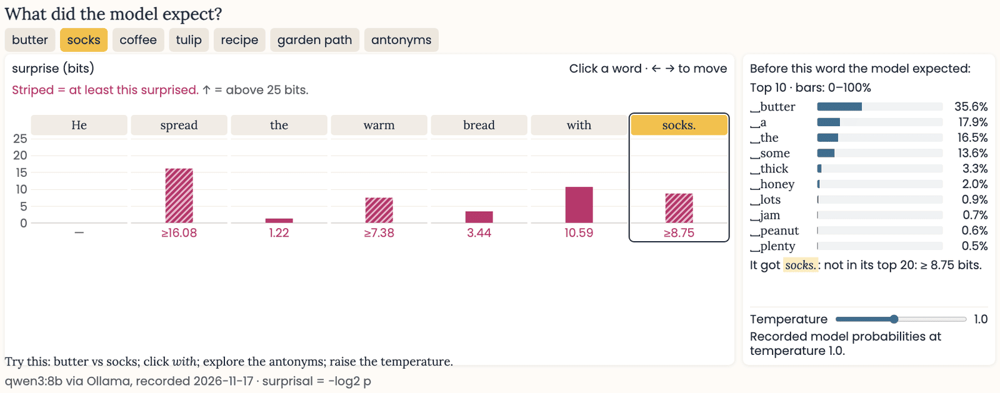
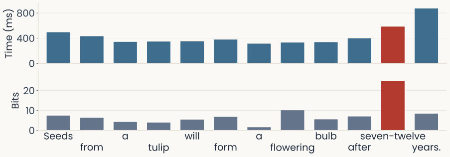

Large language models and the brain
Reader-friendly version of the 48 lecture slides: the lecture content in normal flow, with figure descriptions and data tables where the figure carries data. Open the presentation.
Slide 1
Large language models and the brain
Slide 3
Finish the sentence
He spread the warm bread with ___
- Most of you thought butter: you predicted the next word, as our language models do
- socks (from the attention lecture) → larger EEG response ~400 ms after the word: the N400
- A language model assigns every word a surprisal (how unexpected it is). Does surprisal predict reading times and N400 size?

Kutas and Hillyard 1980, Fig. 1A: the average EEG at the back of the scalp while people read three seven-word sentences one word per second, plotted with negative up. The traces are similar until the last word. It was his first day at work, solid, ends flat; He spread the warm bread with socks, dashed, gives a large negative peak about 400 ms after socks, labeled N400; She put on her high heeled SHOES, with the last word in large type, dotted, gives a positive peak labeled P560
Open full-size figureSlide 4
Scaling up the language model
The same transformer, trained on more text than anyone could read
Slide 5
Where we left off
- Next-token transformers are generative models: sample a token, append it, repeat → text. Same principle behind image and video generators, and world models (later in the course)
- Transformer + self-supervised training (as in vision) → here the target is the next token, so any text is training data (pretraining)
- Today: (1) scaling up: tokenization, data, scaling laws, in-context learning, assistants (instruction tuning, RLHF, tools); (2) large language models (LLMs) as models of readers and brains: surprisal, reading times, the N400, encoding models; (3) predictive coding
Slide 6
From characters to word pieces
- Token = the unit the transformer reads: characters in our assignment model, word pieces in GPT-2. How is the vocabulary chosen?
- Byte-pair encoding (BPE): start with the 256 bytes (text is stored as bytes; an English letter = 1 byte). Find the most frequent pair of neighbors in a large text (
t+h) → addthas one new token. Repeat: each merge adds one token (th+e→the, …) - GPT-2: 256 bytes + 50,000 merges + 1 end-of-text token = 50,257 tokens
- Each step merges the most frequent pair, of any length → frequent words end as one token; rare strings stay in pieces. GPT-2:
brain,neuroscience→ one token each ·tokenization→token+ization·surprisal→surpr+isal· the made-upZorblat→Z+or+bl+at - Llama 3 uses ~128,000 tokens. Rule of thumb for English: 1 token ≈ 0.75 words
Slide 7
How much text do modern LLMs use?
- Llama 3 (Meta, 2024): ~15 T tokens ≈ 130 M books, about every book ever published
- Newer open models:
- Qwen3 (Alibaba, 2025): ~36 T tokens
- Llama 4 (Meta, 2025): > 30 T tokens of text, images and video
- DeepSeek-V3 (2024): 14.8 T tokens; later V3 versions continue from it
- The web: ~510 T tokens indexed by search engines, ~3,100 T in all; ~300 T of usable public text → used up between 2026 and 2032 at the current pace
- A child hears ~130 M tokens by age 13 → Llama 3 reads ~100,000× more
T = trillion · B = billion · M = million · 1 token ≈ 0.75 English words · web figures are estimates
Slide 8
Representative models: the largest are undisclosed
| Model | Year | Built by | Parameters | Training tokens |
|---|---|---|---|---|
| GPT-2 | 2019 | OpenAI | 124 M – 1.5 B | ~10 B |
| GPT-3 | 2020 | OpenAI | 175 B | 300 B |
| Chinchilla | 2022 | DeepMind (Google) | 70 B | 1.4 T |
| Llama 3 | 2024 | Meta | 8 – 405 B | 15 T |
| Frontier models | 2023– | OpenAI, Google, … | ? | ? |
- Foundation model: pretrained on broad data, then adapted to many tasks. Frontier models: the most capable ones (GPT, Claude, Gemini), closed, size and data undisclosed
- A growing gap: academic labs, including brain research, use open models (GPT-2, Pythia, Llama, OLMo), far below the frontier in scale and ability
Slide 9
Scaling laws: the loss falls smoothly with size

Published figure: Figure 1 of Kaplan et al. (2020), Scaling laws for neural language models. Three side-by-side line plots, each with both axes on a logarithmic scale and the language model's test loss (cross-entropy, from about 2 to 7) on the vertical axis. Left panel: loss against compute in petaflop-days, from 10 to the minus 9 up to 10, drawn as many pale blue training curves with a black lower envelope and an orange dashed power-law fit, loss = (compute / 2.3 times 10 to the 8) to the power minus 0.050. Middle panel: loss against dataset size in tokens, from about 2 times 10 to the 7 to 2 times 10 to the 9, with six blue points falling from about 4.1 to 2.7 along a grey line with exponent minus 0.095. Right panel: loss against non-embedding parameters, from about 10 to the 3 to 10 to the 9, with many points falling from about 5.6 to 2.3 along a grey line with exponent minus 0.076. On a log-log plot a power law is a straight line, and all three are straight over several orders of magnitude. The slide uses this to show that loss falls smoothly and predictably as compute, data or parameters grow.
Open full-size figure- A striking finding of modern AI: test loss (cross-entropy, held-out text) falls predictably with scale, a power law (line on log–log axes) in compute (PF-days), data, parameters. Left: one curve per model size; black = best loss
- Why a law? A frontier run takes months → fit small runs first and predict the large run's loss before committing
Slide 10
Scaling laws in practice
- Lower loss ≠ ability, but capabilities have kept improving with scale; abilities often thought to need special architectures came with scale → the bitter lesson: general methods that use more compute win (Sutton 2019)
- Some abilities seem to appear abruptly, often an effect of all-or-nothing scoring (Schaeffer et al.)
- Chinchilla (2022): at equal compute, grow parameters and tokens together → 70 B on 1.4 T tokens beat Gopher's 280 B on 300 B
- Small models are now trained far past that ratio (Llama 3 8B: 15 T tokens) → cheaper every time they answer
Slide 11
Do large models converge?
- As vision and language models grow, they measure distances between the same inputs more and more alike: their representational geometries converge
- Platonic representation hypothesis: scale drives models toward one shared statistical model of reality, the process that generated the data
- Debated: the evidence rests on a few alignment measures, and counterexamples exist
- If true → a brain, shaped by the same world, could be on the same path: the question of the second half of today
Slide 12
In-context learning: what a prompt looks like
-
Before GPT-3: new task → fine-tune the weights on thousands of labeled examples. In-context learning: give the task in the prompt, weights fixed → one model, many tasks (as people learn a task from a few examples)
-
Example task, never trained for: remove the random symbols from a word
-
Zero-shot: the instruction, no examples → relies on pretraining (instructions followed by answers are common in web text)
Remove the symbols from the word. b!r.a/i n = -
Few-shot: a few solved examples, then a new word (one example: one‑shot)
s.u!c/c!e.s s i/o/n = succession·p,l.a!n e/t = planet·b!r.a/i n = -
The model continues the text with
brain. Nothing tells it the rule except the examples it has just read
Slide 13
In-context learning

Published figure from Brown et al. (2020), the GPT-3 paper, showing accuracy on a word-unscrambling task against the number of examples placed in the prompt. The horizontal axis is the number of examples in context, 0 at the left, then 1 and 10 on a logarithmic scale; labels above mark zero-shot (no examples), one-shot (one example) and few-shot (many). The vertical axis is accuracy in percent, 0 to about 67. Three colored groups of lines are labeled 175B, 13B and 1.3B parameters; for each size a solid line is a prompt that also describes the task in natural language and a dashed line has no such description. The 175-billion-parameter model starts at about 8 percent with no examples, reaches about 46 percent with one example when the task is described (about 26 without), and climbs to about 67 percent. The 13-billion model rises from about 1 to about 25 percent, and the 1.3-billion model stays below 5 percent. The task description helps mostly when examples are few. The slide uses the figure to show that in-context learning improves with model size and with more examples.
Open full-size figure- GPT-3 on the task of the previous slide: accuracy grows with the number of examples in the prompt, and with model size. No weight changes: the model learns the task from its prompt
Slide 14
The same thing in a model you can run

Real computation on three small public models, GPT-2 small (124 million parameters), medium (355 million) and large (774 million). A line plot with solid points joined by lines. The horizontal axis is the number of solved examples in the prompt, at 0, 1, 2, 4 and 8. The vertical axis is the percentage of antonym questions answered correctly, 0 to 100. The prompt is a list of word pairs such as hot, cold, followed by a new word whose opposite the model must produce. GPT-2 small stays low at every count, peaking at about 10 percent with one example and sliding to about 4 percent at eight. GPT-2 medium rises from 0 to about 22, 64, 88 and 94 percent. GPT-2 large rises from about 4 to 25, 81, 92 and 96 percent. The two larger models nearly coincide by eight examples. No weights change in any of these runs; only the prompt grows. The slide uses this to show that in-context learning appears with scale and improves with examples, using models students can run themselves.
Open full-size figureReal computation: GPT-2 small, medium and large, weights as trained · 32 antonym pairs, 24 test words × 3 random orders per point
- Prompt:
hot -> cold,big -> small, …wet ->. 8 examples: medium and large 94–96%, small < 10%; 0 examples: all ≈ 0 → the examples define the task; only the larger models use them
Slide 15
In-context learning: surprising results
- A new language from one book: Kalamang (< 200 speakers, almost no web text). With a grammar book in its prompt, Gemini 1.5 translates English → Kalamang about as well as a person who learned from the same book
- Wrong labels in the examples: random labels barely hurt → the examples mostly convey format and label set. Yet with flipped labels (positive and negative swapped), large models follow the examples against what they know; small models cannot
- More examples keep helping: with long contexts, hundreds to thousands of examples (many-shot) → further gains
Slide 16
Where in-context learning comes from

Published diagram: Figure 1.1 of Brown et al. (2020), the GPT-3 paper, a schematic of language-model meta-learning with two nested loops. The outer loop is learning by stochastic gradient descent during pretraining, which runs over many text sequences. Inside each sequence is an inner loop of in-context learning, a list of examples of one task followed by a new case the model must complete. Three example sequences are shown: addition, such as 5 + 8 = 13 and 7 + 2 = 9, then a new sum; unscrambling words, such as gaot => goat, then a new scrambled word; and translating English to French, such as thanks => merci, then a new word. The point is that the model learns, across training, to pick up a task from the examples in its own context. The slide uses this to name in-context learning as a skill acquired by pretraining on text, with no weight update at test time.
Open full-size figure
- Web text: many small tasks shown by example. Outer loop (training, weights change): millions of documents. Inner loop (one document or prompt, weights fixed): the task is picked up from the first examples → meta-learning
Slide 17
How in-context learning works
- Induction heads (last lecture) copy what followed an earlier occurrence of the current token; they form abruptly during training, when in-context learning improves. In large models, function-vector heads (heads whose output encodes the task shown by the examples) matter more for few-shot learning
- A forward pass can also compute something like learning. In theory, one attention layer without softmax can take a gradient-descent step on the examples in its context; transformers trained on regression tasks behave like gradient descent or ridge regression
- → The task lives in the activations; every weight stays fixed
Slide 18
The same recipe in real systems
What a 2026 model is, and what every prompt does
Slide 19
From GPT-2 to today's assistants
- 2019, GPT-2: writes fluent paragraphs from a prompt
- 2020, GPT-3: learns new tasks from a few examples in its prompt
- 2022, ChatGPT: GPT-3.5 trained further to follow instructions and hold a conversation (next slides)
- 2023 on, frontier assistants: OpenAI GPT-4 and GPT-5, Anthropic Claude, Google Gemini (closed); Meta Llama, DeepSeek, Alibaba Qwen (open weights)
- 2024–25, reasoning models (OpenAI o1, DeepSeek-R1): write out intermediate steps before answering, which helps most on math and code
- The core has not changed since GPT-2: a transformer pretrained to predict the next token; what changed is the scale and the training that comes after
Slide 20
Inside a 2026 model
- Mixture of experts: each block's MLP is split into many parallel MLPs ("experts"); a learned router sends each token to a few → DeepSeek-V3: 671 B parameters, 37 B active per token. Not an ensemble: only a few experts run
- Multimodal: image patches as tokens → one transformer for text and images
- Long context: 2,048 tokens (GPT-3) → ~1 M, a few novels
- Hybrids: many long-context models replace most attention layers with recurrent ones, which are cheaper on long inputs (next lecture)
Slide 21
From autocomplete to assistant

Published diagram: Figure 2 of Ouyang et al. (2022), the InstructGPT paper, showing three training steps as three panels from left to right. Step 1, supervised fine-tuning: a prompt such as Explain the moon landing to a 6 year old is given to a human labeler, who writes a good answer; GPT-3 is fine-tuned on these demonstrations. Step 2, reward model: the model writes several answers to a prompt, a labeler ranks them from best to worst, and the rankings train a reward model that scores answers. Step 3, reinforcement learning: for a new prompt such as Write a story about frogs, the model writes an answer, the reward model scores it, and that score updates the model with a policy-gradient method (PPO). Arrows connect prompts, outputs, labelers and models. The slide uses it to show how a pretrained next-token predictor becomes an assistant that follows instructions.
Open full-size figure- InstructGPT (behind ChatGPT): SFT (supervised fine-tuning) on demonstrations → reward model fit to human rankings → reinforcement learning (PPO) against the reward model
Slide 22
Alignment: three training stages
After pretraining, the model only predicts the next token. Three more training stages turn it into an assistant:
- Supervised fine-tuning (SFT) on human-written demonstrations of good answers
- Learning from preferences. RLHF (reinforcement learning from human feedback) fits a reward model to human choices between two answers, then updates the model to raise the reward-model score (reinforcement learning). DPO (direct preference optimization) learns from the same choices directly, with no reward model
- Reinforcement learning from verifiable rewards: reward answers that a program can check, such as a math result or code that passes its tests. This is how reasoning models learn to write out intermediate steps before answering: extra tokens, not extra weights (test-time compute)
Slide 23
Every prompt is in-context learning
- Before an assistant answers, it reads one long context: the provider's instructions, your earlier messages, any examples you give, and text the system adds for you, such as web pages, files and tool results. Adding retrieved text this way is retrieval-augmented generation
- The model draws on two sources. The weights hold what it learned in pretraining; the context holds what you and the system have written so far. Only the context changes during a conversation
- The weights do not learn from your conversation: when the context is gone, so is everything in it. Saved "memories" are text put back into a later context
- Long contexts are expensive: the KV cache (keys and values of every token, last lecture) must be stored → a 1 M-token window needs a lot of memory
Slide 24
Tools and agents
- A tool call is text the model writes that a program runs. The model writes
search("Natural Stories reading times"); the system runs the search and pastes the results into the context - An agent repeats this loop: it writes code, the system runs it, the model reads the error, fixes the code, and runs it again, until the task is done or it gives up
- Everything the agent knows about your task sits in its growing context → it can lose track of a long task
Slide 25
A model of the reader, and of the brain?
Two tests of the same model: word probabilities → reading times and N400; internal activations → brain responses
Slide 26
Surprisal: how unexpected a word is
- Surprisal theory comes from psycholinguistics, before language models. It says the reading time of a word grows ~linearly with its surprisal. Reading time is how long the eyes rest on the word, or how long a reader waits before pressing the key for the next word
- N400 (opening sentence): larger for unexpected words → LLM surprisal predicts its size word by word (Michaelov et al. 2023)
- Surprisal = the per-word cross-entropy loss, in bits (log base 2; training used nats, 1 nat ≈ 1.44 bits). 10 bits ≈ p of 1/1,000; 0 bits = certain. A language model gives it for every word of any text → the theory can be tested at scale
Slide 27
Surprisal from a real model, token by token

Real computation on three public models, GPT-2 small (124 million parameters), medium (355 million) and large (774 million). A grouped bar chart. The horizontal axis lists the tokens of the sentence My grandmother's recipe calls for two cups of flour and a pinch of salt, with a leading space marked by a dot; the first token has no bar because nothing precedes it. Each token has three bars, one per model, giving its surprisal in bits, the negative base-2 log probability the model gave it given the earlier words, on a vertical axis running 0 to about 15. Grandmother is the tallest, 14.5 bits for the small model (a callout says about 1 chance in 22,657) and about 8.5 for the medium and large ones. Recipe is about 8 to 10 bits. The token for and the second of are near zero, and a callout notes that 0 bits means the model was sure. Salt is also near zero. Mean surprisal over the sentence is 4.0, 3.5 and 3.3 bits for small, medium and large. The slide uses this to show what surprisal is and that bigger models are on average less surprised.
Open full-size figureReal computation: GPT-2 small, medium and large, weights as trained · a dot marks a token that begins with a space
- Each bar is of the probability the model gave the token that actually came next. Function words after a verb cost almost nothing; the first content word, grandmother, costs 14.5 bits. Bigger model, fewer bits: 4.0 → 3.5 → 3.3 on average
Slide 28
Try it: what did the model expect?

What did the model expect demo: the socks sentence with a surprisal bar per word; socks is outside the model's top 20 guesses, at least 8.75 bits. The side panel lists what the model expected after with: butter 36%, a 18%, the 17%, some
Open full-size figure
- For you to try at home: a real 8 B model's surprisal for each word, and what it expected instead
Slide 29
What it means to predict reading times

Real data and computation on one sentence from the Natural Stories self-paced reading corpus, Seeds from a tulip will form a flowering bulb after seven-twelve years. Two stacked bar charts share the same twelve words along the bottom. The top chart gives mean reading time in milliseconds, 0 to about 900, averaged over many readers. Most words sit between about 310 and 500 ms (Seeds about 490, a about 310). Seven-twelve, drawn in red, is about 580 ms, and the final word years is the slowest at about 870 ms. The bottom chart gives each word's surprisal in bits under GPT-2 small, 0 to about 25. Most words are 2 to 10 bits (flowering about 10, the second a about 2), while seven-twelve, also in red, is the clear peak at about 25 bits. The unexpected word draws the highest surprisal and a longer reading time, and the slowdown carries into the next word. The slide uses this to link model surprisal to human reading times.
Open full-size figure
Real computation: Natural Stories self-paced reading times · GPT-2 small surprisal, whole story as context
- Self-paced reading: readers press a key to reveal each word. The unexpected seven-twelve (24.8 bits) slows them down, and the slowdown spills onto the next word. Surprisal and reading time correlate at r = 0.30 over the story. Next: what surprisal adds beyond word length and frequency
Slide 30
Against human readers: bigger is not better

Published figure: Figure 1 of Oh and Schuler (2023), panel for the Natural Stories self-paced reading corpus. A scatter plot. The horizontal axis is language-model perplexity on a log scale, from about 2 to the 3.2 to 2 to the 4.8; the vertical axis is delta log-likelihood, the gain in how well a regression predicts human reading times when the model's surprisal is added, from about 375 to 640. Three model families are plotted with dashed least-squares lines: GPT-2 (blue circles, small to XL), GPT-Neo (orange squares, 125 million to 20 billion parameters) and OPT (green hexagons, 125 million to 66 billion). Each point is labeled with its size. In every family the smallest models, with the highest perplexity, give the largest gain, near 600 to 640, and the largest models give the smallest, near 380 to 400. Better next-word predictors therefore explain reading times worse. The slide uses this to show that the best language model is not the best model of human reading.
Open full-size figure- ΔLL: gain in log-likelihood (fit to reading times) when surprisal is added to word length and frequency. Lower perplexity (better text prediction) → lower ΔLL in larger models
- Same as in vision: past human-level accuracy, better ImageNet models are worse models of IT
Slide 31
Better language model, better brain model?
- Brain responses: yes, so far. Models that predict the next word better also predict brain responses to language better. This holds in fMRI (blood oxygenation, whole brain, a few seconds' resolution) and ECoG (electrodes on the surface of the cortex, milliseconds), and the fit grows logarithmically with size up to 30-billion-parameter models
- Measured with an encoding model: a ridge readout from the model's activations to each voxel or electrode, as for IT
- Reading times: no, past a point. Surprisal from larger models fits readers worse (previous slide)
- Open: brain data and reading times disagree about the best model. Possible reason: a large model has read far more text than any person, so it finds words predictable that a reader does not
Slide 32
Using the model to control the brain
![Figure 2 of Tuckute et al.: A, the left-hemisphere language network on an inflated brain; B and C, bar charts of the language network's fMRI response to drive, suppress and baseline sentences, in an event-related design with three participants and a blocked design with four. Drive sentences give the highest response and suppress sentences the lowest in both; D, example sentences: drive sentences are odd or ungrammatical, such as Jiffy Lube of, of therapies, yes; suppress sentences are plain, such as We were sitting on the couch](../images/L18/pub_tuckute2024_fig2_drive_suppress.png)
Published figure: Figure 2 of Tuckute et al. (2024), driving and suppressing the human language network with sentences chosen by a language model. Panel A shows the left hemisphere on an inflated brain, with the language network in red along the temporal lobe and in frontal cortex, defined separately for each participant. Panel B is a bar chart for an event-related design with three participants. Vertical axis: z-scored fMRI (BOLD) response of the language network; bars for the drive, suppress and baseline conditions. Drive sentences are highest at about 0.28, suppress sentences are lowest at about minus 0.29, and baseline is near 0; dots show individuals. Panel C is the same for a blocked design with four participants: drive about 0.7, suppress about minus 1.2, baseline about 0.5. Panel D lists example sentences. Drive sentences are odd or fragmentary, such as Jiffy Lube of -- of therapies, yes. Suppress sentences are plain, such as We were sitting on the couch. Baseline sentences are ordinary corpus text. The slide uses this to show that a model of language can predict, and control, activity in the brain's language regions.
Open full-size figure- Encoding model: GPT-2 XL → fMRI of the language network (areas more active for sentences than nonwords). It then picks new sentences to raise or lower the network's response → confirmed in new participants
Slide 33
Language models and the brain: current readings
- Three encoding-model results, then a caution:
- Hours of real conversation: one speech-to-text model's sound, speech and word embeddings each predict ECoG activity across 100 h of everyday conversation, and the model's levels line up with the cortical hierarchy (Goldstein et al. 2025)
- Single neurons: the same readout, neuron by neuron, separates cells that track a word's part of speech and syntactic dependencies from cells that track phrase and sentence structure (Cai et al. 2026)
- What the fit tracks: across 34 saved stages of one training run, it follows a model's grammatical knowledge, not its world knowledge or reasoning (AlKhamissi et al. 2025)
- A caution from 2026: an untrained network, which has learned no language, can reach a good brain fit through shuffled train–test splits and confounds such as word rate (words per second). Some influential results were inflated this way (Hadidi et al. 2026)
Slide 34
The brain as a prediction machine
Does the brain predict its input the way a language model does?
Slide 35
Predictive coding: the core claim
- Predictive coding, a theory of perception: the brain runs an internal generative model, predicts its sensory input and learns from the mismatch (as autoencoders do)
- Each level passes up the prediction error, the part of its input that the prediction did not explain, rather than the raw signal
- In language: surprisal tracks N400 size and reading time → consistent with prediction; dedicated error circuits remain a hypothesis
- A hypothesis, not a settled fact: language data support it (next slide), but recordings across cortical layers show feedback that enhances predicted activity rather than cancelling it (Westerberg & Roelfsema 2026)
Slide 36
Testing it with a language model

Published figure: Figure 2 of Caucheteux, Gramfort and King (2023), evidence for predictive coding in the brain during language comprehension. Seven panels labeled a to g, from fMRI of 304 people listening to stories. Panel a, brain maps: the brain score of GPT-2 activations, how well they predict each region's activity, from 0.005 to 0.230, is highest along the superior temporal sulcus. Panels b and d, line plots: adding the model's representation of the word d positions ahead (horizontal axis, distance to the current word, minus 10 to 30) raises the brain score, peaking at about 8 words ahead. Panel c, brain map: the regions where this forecast gain is significant, across temporal, parietal and frontal cortex. Panel e, brain map: the best forecast distance in each region, from 7.5 to 9.5 words. Panel f, line plots comparing two regions: forecast score peaks earlier in anterior superior temporal sulcus (about 7 words) than in inferior frontal gyrus (about 9). Panel g, dots by region, show best forecast distance growing from about 8 in the mid superior temporal sulcus to about 9.2 in frontal regions. The slide uses this to show that the brain appears to predict upcoming words, further ahead in higher regions.
Open full-size figure- 304 people heard stories in fMRI. Adding GPT-2's activations for the next 8 words improved the fit: brain activity carries information about upcoming words (prediction, or context? see Open questions)
Slide 37
Predictive coding and autoencoders
- Autoencoder: minimizes the reconstruction residual by backprop (one forward, one backward sweep)
- Predictive coding minimizes the same residual by iterative settling (update until the error is small): a higher level's estimate of the causes relaxes until its prediction explains the input (Rao & Ballard 1999); the weights follow a local rule (each weight changes using only the activity of the two units it connects)
- Same residual, different algorithm: predictive coding needs only local error circuits, which may be how cortex does it
Slide 38
Open questions
- Brain or behavior? Which should a cognitive model answer to? Would a model trained on about as much text as a person reads fit both?
- Does the brain predict, or only carry information about what comes next? Brain activity that fits better when GPT-2 sees upcoming words shows that the brain holds information about the future. It does not show that the brain sends prediction errors up, as predictive coding says
- In-context learning in a brain? A model learns a task from its prompt with frozen weights, in its activations. Is some fast human learning also held in activity rather than in changed synapses? → Next lecture: recurrent networks, which also hold context in activity
Slide 39
Recap
- An LLM is a decoder transformer trained to predict the next token (word pieces from byte-pair encoding) on a very large amount of text
- In-context learning emerges from next-token training (no separate objective): GPT-2 medium and large show it, every prompt uses it, weights stay fixed
- Surprisal in bits, , from LLMs tracks brain responses, the N400 and reading times, but larger models fit readers worse while fitting the brain better, and a brain fit needs its controls
- Predictive coding: the brain may predict its input and send errors up; the evidence runs both ways
Slide 40
The assistant you may use on the project
- AI assistants are allowed on the final project, with disclosure. They are the models from today
- They are trained to produce likely text, which is not always true text. So they hallucinate: they invent citations and results that look plausible. They are also prompt-sensitive: rephrase a question and the answer can change
- So check every claim and citation an assistant gives you against its source; the writer–critic workflow from recitation does this systematically
- Whether an LLM is also a good model of how people think is still argued. Binz & Schulz (2023) gave GPT-3 classic psychology experiments, and Binz et al. (2025) fine-tuned a model on human choices
Slide 41
For your final project
- Dates: teams registered on Canvas Thu 11/19 · proposal, one page per team, Wed 12/2 at 11:59 PM · poster session and report Mon 12/21 at 9:00 AM
- Data and models: anything from the lectures and assignments, or anything else you can get your hands on; GPT-2 or Pythia for surprisal run on the course Colab
- AI tools (previous slide): at the poster we may ask either of you about any line of your code
- Testing an LLM? Public benchmarks may be in its training data (contamination) → test on new items
- The brief, with dates and the proposal checklist: serre-lab.github.io/CPSY1291-2026/final-project
- Questions from today: which model size fits readers best, and does the answer change with the reading-time corpus? Does a self-supervised network rival a supervised one on your brain data?
Slide 42
Further reading
Papers from today worth reading, for your project or out of interest.
- Oh & Linzen TICS 2026: to model human prediction, make language models less superhuman
- Hadidi et al. Nat Commun 2026: how model–brain alignment can arise from confounds
- Cai et al. Nature 2026: single human neurons during speech, read through a language model
- Goldstein et al. Nat Hum Behav 2025: one speech model's levels match the cortical hierarchy during real conversation
- AlKhamissi et al. EMNLP 2025: brain alignment tracks a model's grammar, not its world knowledge
- Westerberg & Roelfsema TICS 2026: cortical feedback during perception does not do what predictive coding predicts
Slide 43
Minute paper
Submit on Canvas → Minute papers → Minute Paper 18 (access code read out in class).
Write three brief points in your own words:
- Write a few-shot prompt for a task of your choice (two or three solved examples, then a new input), and say what a large model should answer
- Something you do not yet understand, or a question still open
- Another idea you found interesting, and why it matters for brains, behavior or AI
Credit for a thoughtful attempt, not for being correct.
Slide 44
Going further
Predictive coding in detail
Slide 45
Rao & Ballard (1999)
- Each level predicts the level below through top-down connections; the residual, the prediction error, is sent bottom-up
- A higher level holds an estimate of the causes, predicts lower activity , and the error drives the update
- Trained on natural-image patches, it develops oriented, Gabor-like receptive fields, as sparse coding did, and predicts surround suppression (weaker response when the surround continues the pattern in the receptive field)
Slide 46
The predictive-coding equations
At one level: prediction of the level below , error .
Inference (fast, within one stimulus: settle to reduce the error):
Learning (slow, across stimuli: a local, Hebbian-like rule):
- is the top-down prediction; carries the error bottom-up
- Each update uses only quantities available at that connection, the error and the activity, so there is no global backward pass
Slide 47
Predictive coding as a deep net: PredNet
- Lotter, Kreiman & Cox stacked Rao–Ballard-style modules: each layer predicts the layer below and passes the prediction error up, trained on video to predict the next frame
- The trained network reproduces perceptual effects nobody built in, such as the flash-lag illusion
- From brain to AI: a 1999 theory becomes a trainable architecture

Published diagram: Figure 1 of Lotter, Kreiman and Cox (2016), the PredNet architecture. Left side: two stacked layers, l and l plus 1. Each layer has four kinds of square module. Green representation units R, with a recurrent loop arrow, send a prediction down to a blue module (A-hat), the predicted input. This is compared, through a circled minus sign, with a blue target module A, the actual input of that layer. The difference feeds a red error module E. Error signals go up the hierarchy to the next layer's target and to the representation units, and the representation of the higher layer passes downward to the one below. Right side: the same unit drawn with its operations. Representation is a convolutional LSTM; the prediction is a convolution; the target is a convolution then pooling of the input; and the error subtracts the two and applies a rectifier to the positive and negative parts. The slide uses this to show a network built around predicting its input and passing on only the error.
Open full-size figureSlide 48
Is backprop biologically plausible?
- Backprop's problems for biology: a separate backward pathway; weight transport (backward weights must equal the forward ones); a global two-phase schedule; non-local error signals
- Predictive coding offers local learning: errors computed in place by error units; updates use only the activity of the connected units
- Under some conditions predictive coding approximates the backprop gradient
- Still a hypothesis: direct evidence for cortical error units is debated